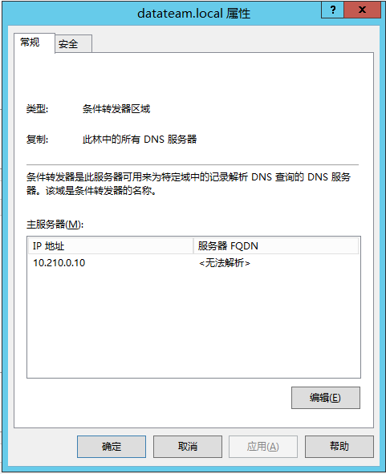
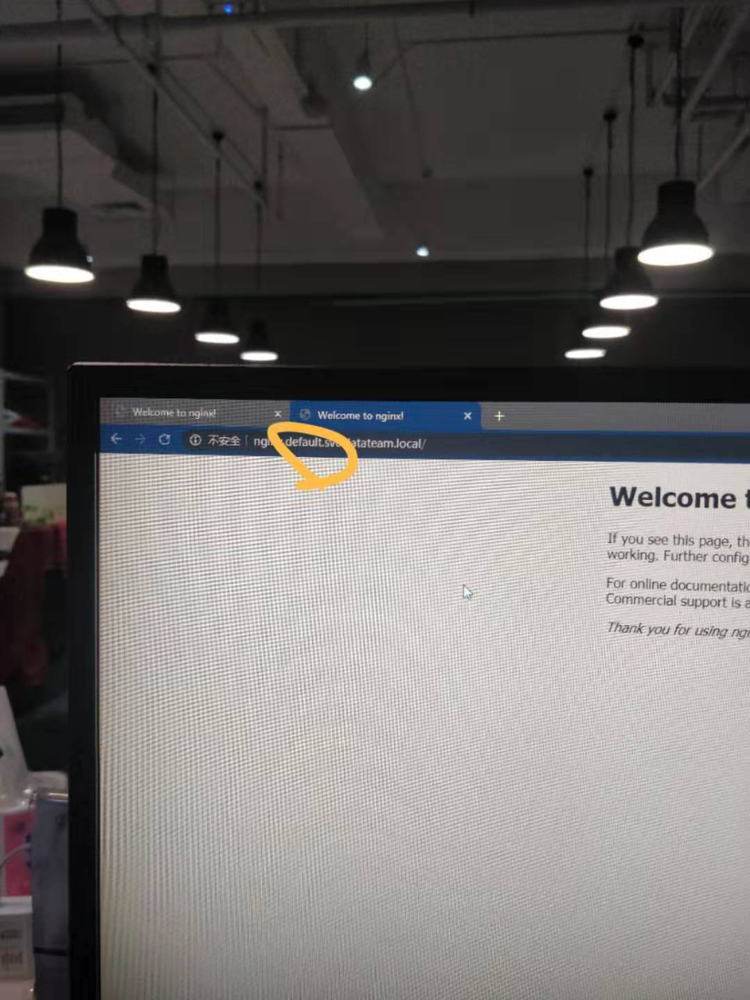
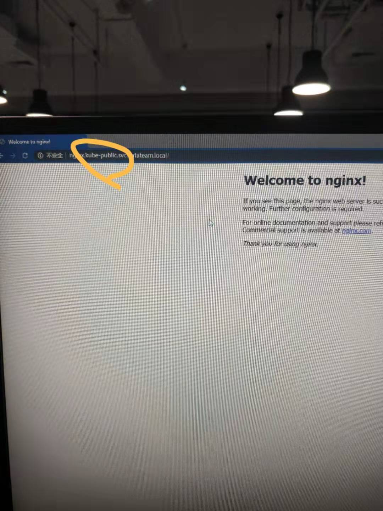

How To Configure Accessing Calico Endpoint From Outside of The Cluster
This article’s purpose
Our software technology stack is mainly Java with micro-service frameworks(e.g. Spring Boot, Consul).
And we’re moving from VM to Kubernetes. Considering cases of putting consumer or/and registry conponents outside of the Kubernetes cluster, we have to make our network plane allows workload accessing Pod IP, Service IP from outside the Kubernetes cluster.
In previous article, I mentioned that the circumstance I’m facing is On-prem L2 networks.
Because there’s no one can handle the “BGP peering with physical infrastructure“.
I decided to use Calico node as gateway to access Calico’s network from outside the cluster.
This article contains procedures of below
- Disable default node-to-node mesh
- Configure node as Route Reflector
- Configure IP in IP encapsulation for only cross subnet traffic
- Add route rules on VM outside of Calico cluster
- Summary and guess of optimization
Assets List
| Host Name | IP Address | Description | Subnet |
|---|---|---|---|
| ip-10-20-1-81 ~ ip-10-20-1-83 | 10.20.1.81 ~ 10.20.1.83 | Calico Route Reflector | 10.20.0.0/23 |
| ip-10-20-1-84 ~ ip-10-20-1-85 | 10.20.1.84 ~ 10.20.1.85 | Calico Node | 10.20.0.0/23 |
| iot-brand-website-ravpower-middleware-dev | 10.20.1.206 | Outside of Calico cluster | 10.20.0.0/23 |
| Shounen-HP-Z | 10.35.1.61 | My Work PC | 10.30.1.0/24 |
Some CIDR infomation
cluster-cidr: 10.244.0.0/16
service-cidr: 10.96.0.0/12
podCIDR:
- 10.244.0.0/24
- 10.244.1.0/24
- 10.244.2.0/24
- 10.244.3.0/24
- 10.244.4.0/24
ip-pool:
-
default-ipv4-ippool:
range: 10.244.0.0/16
nodeSelector: all()Disable default node-to-node mesh
Export the default BGPConfiguration
calicoctl get bgpconfiguration default -o yaml --export > ~/calico/configure_bgp_peering/bgpconfiguration_default.yamlModify the
nodeToNodeMeshEnabledfield tofalsecalicoctl apply -f - << EOF apiVersion: projectcalico.org/v3 kind: BGPConfiguration metadata: name: default spec: nodeToNodeMeshEnabled: false asNumber: 64512 EOF
reference link: Disable the default BGP node-to-node mesh
Configure node as Route Reflector
I have Kubernetes installed with Calico, these are my k8s nodes.
$ kubectl get node -o wide NAME STATUS ROLES AGE VERSION INTERNAL-IP EXTERNAL-IP OS-IMAGE KERNEL-VERSION CONTAINER-RUNTIME ip-10-20-1-81 Ready master 27d v1.16.3 10.20.1.81 <none> CentOS Linux 7 (Core) 3.10.0-1062.9.1.el7.x86_64 docker://19.3.5 ip-10-20-1-82 Ready master 27d v1.16.3 10.20.1.82 <none> CentOS Linux 7 (Core) 3.10.0-1062.9.1.el7.x86_64 docker://19.3.5 ip-10-20-1-83 Ready master 27d v1.16.3 10.20.1.83 <none> CentOS Linux 7 (Core) 3.10.0-1062.9.1.el7.x86_64 docker://19.3.5 ip-10-20-1-84 Ready worker 27d v1.16.3 10.20.1.84 <none> CentOS Linux 7 (Core) 3.10.0-1062.9.1.el7.x86_64 docker://18.9.9 ip-10-20-1-85 Ready worker 26d v1.16.3 10.20.1.85 <none> CentOS Linux 7 (Core) 3.10.0-1062.9.1.el7.x86_64 docker://19.3.5To configure a node to be a route reflector with cluster ID 244.0.0.1, run the following command.
About routeReflectorClusterID:
all the route reflector nodes should have the same cluster ID.Footnote-1calicoctl patch node ip-10-20-1-81 -p '{"spec": {"bgp": {"routeReflectorClusterID": "244.0.0.1"}}}' calicoctl patch node ip-10-20-1-82 -p '{"spec": {"bgp": {"routeReflectorClusterID": "244.0.0.1"}}}' calicoctl patch node ip-10-20-1-83 -p '{"spec": {"bgp": {"routeReflectorClusterID": "244.0.0.1"}}}'Label node(s) to indicate that it is a route reflector
calicoctlcan also label a Calico node, butkubectl get node --show-labelswould not show the label, butcalicoctl get node -o yamlwould show the label patched bykubectl.kubectl label node ip-10-20-1-81 ip-10-20-1-82 ip-10-20-1-83 route-reflector=trueConfigure non route reflector node peer with route reflector and route reflectors peering with each other.
cat<<EOF | calicoctl apply -f - kind: BGPPeer apiVersion: projectcalico.org/v3 metadata: name: peer-with-route-reflectors spec: nodeSelector: "!has(route-reflector)" peerSelector: route-reflector == 'true' EOF cat<<EOF | calicoctl apply -f - kind: BGPPeer apiVersion: projectcalico.org/v3 metadata: name: rrs-to-rrs spec: nodeSelector: route-reflector == 'true' peerSelector: route-reflector == 'true' EOFAfter configuring, you should see route reflector’s node status as below
$ def_inf=`ip route | grep -Ei default | awk '{print $5}'` $ echo $def_inf ens192 $ ip addr show $def_inf | grep inet | awk '{ print $2; }' | sed 's/\/.*$//' 10.20.1.81 $ calicoctl node status Calico process is running. IPv4 BGP status +--------------+---------------+-------+----------+-------------+ | PEER ADDRESS | PEER TYPE | STATE | SINCE | INFO | +--------------+---------------+-------+----------+-------------+ | 10.20.1.84 | node specific | up | 12:00:00 | Established | | 10.20.1.85 | node specific | up | 12:00:00 | Established | | 10.20.1.82 | node specific | up | 12:02:53 | Established | | 10.20.1.83 | node specific | up | 12:03:04 | Established | +--------------+---------------+-------+----------+-------------+ IPv6 BGP status No IPv6 peers found.After configuring, you should see node’s node status as below
$ def_inf=`ip route | grep -Ei default | awk '{print $5}'` $ ip addr show $def_inf | grep inet | awk '{ print $2; }' | sed 's/\/.*$//' 10.20.1.84 $ calicoctl node status Calico process is running. IPv4 BGP status +--------------+---------------+-------+----------+-------------+ | PEER ADDRESS | PEER TYPE | STATE | SINCE | INFO | +--------------+---------------+-------+----------+-------------+ | 10.20.1.81 | node specific | up | 12:00:00 | Established | | 10.20.1.82 | node specific | up | 12:02:53 | Established | | 10.20.1.83 | node specific | up | 12:03:04 | Established | +--------------+---------------+-------+----------+-------------+ IPv6 BGP status No IPv6 peers found.
reference link:
Configure IP in IP encapsulation for only cross subnet traffic
If you assume all of your nodes are in the same subnet, you can simply disable IPIP mode.
Otherwise you should configure BGP peering with your physical routers or use IPIP mode.
In order to accelerate the traffic, I configured encapsulation for cross subnet traffic only.
$ cat<<EOF | calicoctl apply -f -
apiVersion: projectcalico.org/v3
kind: IPPool
metadata:
name: default-ipv4-ippool
spec:
cidr: 10.244.0.0/16
ipipMode: CrossSubnet
natOutgoing: true
EOF
$ calicoctl get ipPool -o wide
NAME CIDR NAT IPIPMODE VXLANMODE DISABLED SELECTOR
default-ipv4-ippool 10.244.0.0/16 true CrossSubnet Never false all()
Add route rules to make it accessible from outside of cluster
Since we are unable to configure BGP peering with physical routers or switches, I just googled for “Calico micro-service access outside cluster” and found out some articles recording that just simply add route rules to a server like below:
Notice: After steps above, there’s some confilcts between the default Pod subnet and our on-premises infructure, so I reseted my cluster’s IP subnet.
The global route rules
Acctually, Calico will maintain a list of route rules like below.
Notice that the whole Pod subnet are splited into small IP blocks in Calico’s SDN routing system, depending on the increasement of workload(here, which is k8s Pod).
[root@ip-10-20-1-84 ~]# ip route show
default via 10.20.0.1 dev ens192
10.20.0.0/23 dev ens192 proto kernel scope link src 10.20.1.84
blackhole 10.200.0.192/26 proto bird
10.200.0.193 dev cali00b03047dbe scope link
10.200.1.0/26 via 10.20.1.81 dev ens192 proto bird
10.200.1.64/26 via 10.20.1.82 dev ens192 proto bird
10.200.1.128/26 via 10.20.1.83 dev ens192 proto bird
10.200.1.192/26 via 10.20.1.85 dev ens192 proto bird
169.254.0.0/16 dev ens192 scope link metric 1002
172.17.0.0/16 dev docker0 proto kernel scope link src 172.17.0.1
[root@ip-10-20-1-84 ~]#I will just add the whole Pod subnet and service subnet rule, this is gonna trigger some “nexthop” phenomenon, I guess that means there’s packet loss problem.
But, for now, we just leave it behind.
[root@harbor ~]# ping 10.200.1.193
PING 10.200.1.193 (10.200.1.193) 56(84) bytes of data.
64 bytes from 10.200.1.193: icmp_seq=1 ttl=63 time=0.486 ms
From 10.20.1.84 icmp_seq=2 Redirect Host(New nexthop: 10.20.1.85)
From 10.20.1.84: icmp_seq=2 Redirect Host(New nexthop: 10.20.1.85)
64 bytes from 10.200.1.193: icmp_seq=2 ttl=63 time=0.524 msHere is the global route rules to add:
# Pod IP
ip route add 10.200.0.0/23 via 10.20.1.84 # I've change the default Pod subnet from 10.244.0.0/16 to 10.200.0.0/23
# Service IP
ip route add 10.210.0.0/24 via 10.20.1.84 # I've change the default Pod subnet from 10.96.0.0/12 to 10.210.0.0/24After appending the route rules:
# Initial route table outside cluster
[root@harbor ~]# ip route show
default via 10.20.0.1 dev ens192 proto static metric 100
10.20.0.0/23 dev ens192 proto kernel scope link src 10.20.1.222 metric 100
172.17.0.0/16 dev docker0 proto kernel scope link src 172.17.0.1
172.18.0.0/16 dev br-1f4086f25e8d proto kernel scope link src 172.18.0.1
[root@harbor ~]#
# Add route rule
[root@harbor ~]# ip route add 10.200.0.0/23 via 10.20.1.84
[root@harbor ~]# ip -4 -o addr
1: lo inet 127.0.0.1/8 scope host lo\ valid_lft forever preferred_lft forever
2: ens192 inet 10.20.1.222/23 brd 10.20.1.255 scope global noprefixroute ens192\ valid_lft forever preferred_lft forever
3: docker0 inet 172.17.0.1/16 brd 172.17.255.255 scope global docker0\ valid_lft forever preferred_lft forever
7151: br-1f4086f25e8d inet 172.18.0.1/16 brd 172.18.255.255 scope global br-1f4086f25e8d\ valid_lft forever preferred_lft forever
[root@harbor ~]#
[root@harbor ~]# ip route show
default via 10.20.0.1 dev ens192 proto static metric 100
10.20.0.0/23 dev ens192 proto kernel scope link src 10.20.1.222 metric 100
10.200.0.0/23 via 10.20.1.84 dev ens192
172.17.0.0/16 dev docker0 proto kernel scope link src 172.17.0.1
172.18.0.0/16 dev br-1f4086f25e8d proto kernel scope link src 172.18.0.1
[root@harbor ~]#
# After adding route rule, server outside can access Pod
[root@harbor ~]# curl -s 10.200.1.193
<!DOCTYPE html>
<html>
<head>
<title>Welcome to nginx!</title>
<style>
body {
width: 35em;
margin: 0 auto;
font-family: Tahoma, Verdana, Arial, sans-serif;
}
</style>
</head>
<body>
<h1>Welcome to nginx!</h1>
<p>If you see this page, the nginx web server is successfully installed and
working. Further configuration is required.</p>
<p>For online documentation and support please refer to
<a href="http://nginx.org/">nginx.org</a>.<br/>
Commercial support is available at
<a href="http://nginx.com/">nginx.com</a>.</p>
<p><em>Thank you for using nginx.</em></p>
</body>
</html>
[root@harbor ~]#
# This is the Pod I just accessed
[root@datateam-k8s-control-plane-01 manifest]# kubectl get pod -o wide | sed -rn '1p;/10.200.1.193/Ip'
NAME READY STATUS RESTARTS AGE IP NODE NOMINATED NODE READINESS GATES
nginx-764ddbb9cf-d2q56 1/1 Running 0 25m 10.200.1.193 ip-10-20-1-85 <none> <none>
[root@datateam-k8s-control-plane-01 manifest]#Extended practice - add the route rules to switches to make it available for all servers and workstations in LAN
So, the theory is as same as the scenario above, I just asked a colleague who is in charge of network devices to add the route rules above.
Then it works, as below.
After adding route rules, I configured DNS server to forward searching related my Kubernetes cluster’s service to CoreDNS’s service IP.
datateam.local is our cluster’s domain name.

And then I can access any service directly, without ingress, NodePort, LoadBalancer or ExternalName.Footnote-2


Now, CoreDNS is available on my whole LAN!!
Footnote
footnote-1
https://docs.projectcalico.org/v3.7/networking/bgp
↩
footnote-2
https://kubernetes.io/zh/docs/concepts/services-networking/service/#publishing-services-service-types
↩